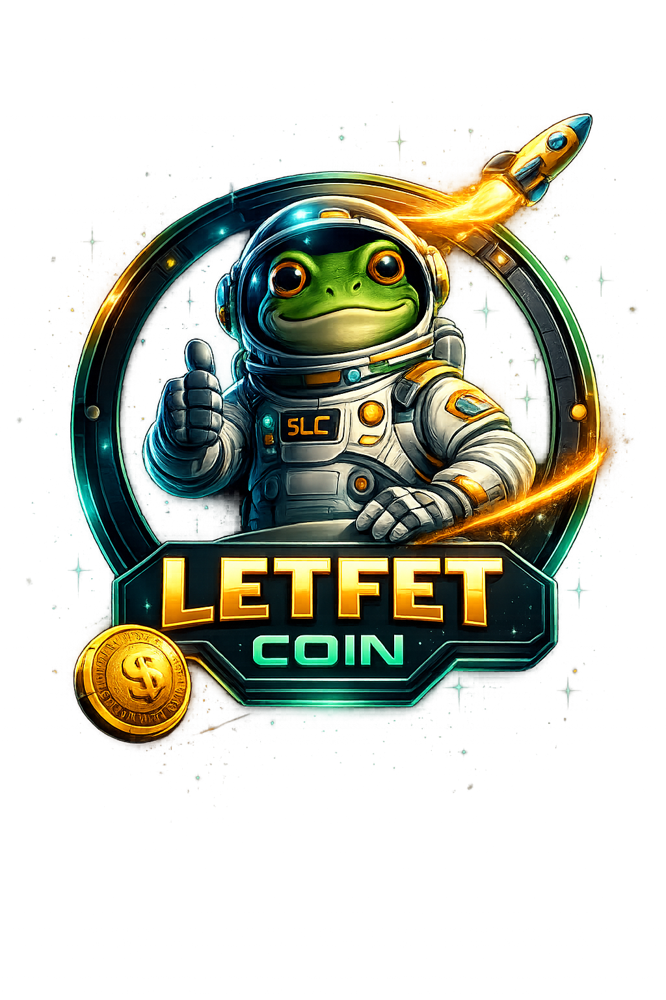
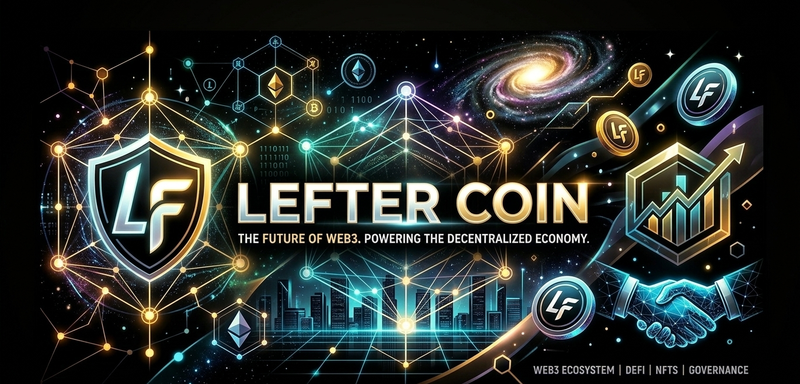

The Future of Web3

Letfet Coin is a decentralized digital asset designed to power the next generation of Web3 applications. The project aims to create a transparent ecosystem where community members participate in governance, finance, and innovation. Our mission is to build a secure and scalable blockchain ecosystem that integrates DeFi, NFT technology, and decentralized governance.
Our vision is to create a global decentralized financial ecosystem where users maintain full control of their digital assets. Letfet Coin aims to bridge traditional finance and blockchain technology while maintaining transparency and community governance.
Letfet Coin is built using modern blockchain technology to ensure fast transactions, security, and scalability. The platform is designed to support decentralized applications, smart contracts, and digital asset management. The project focuses on three core pillars:
Total Supply: 1,000,000,000 LETFET
Blockchain: Solana
Transaction Tax: 0%
Distribution:
Phase 1
Launch of the project, website, and community building.
Phase 2
Expansion of partnerships, marketing campaigns, and ecosystem development.
Phase 3
Global adoption, exchange listings, and advanced platform tools.
Security and transparency are essential to the Letfet Coin ecosystem. Smart contracts are designed to be secure, and the project prioritizes community trust and responsible development.
Letfet Coin represents a step forward in decentralized finance and Web3 innovation. Through strong community participation, transparent governance, and modern blockchain technology, the project aims to contribute to the future of decentralized digital economies.